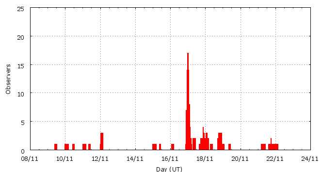

This page shows automated results of the Leonids 2008, based on visual data entered through the IMO electronic report form. Note that these automated results may not be suitable for scientific use; please refer to manual analysis results published in journal papers (e.g., WGN) when available. Send your feedback regarding this page to Geert Barentsen.
Page generated: 2008 December 8 at 23:15 UT.
ZHRmax = 99 based on 672 Leonids in 298 data intervals, assuming fixed population index r = 2.0 and zenith correction 1/sin(hR).

| Time (UT) | Solarlon | nINT | nLEO | ZHR | |
|---|---|---|---|---|---|
| 2008-11-09 21:13 | 227.727 | 6 | 10 | 4 | ±1 |
| 2008-11-10 21:25 | 228.740 | 6 | 12 | 5 | ±1 |
| 2008-11-12 00:14 | 229.863 | 17 | 18 | 10 | ±2 |
| 2008-11-12 03:30 | 230.000 | 8 | 10 | 17 | ±5 |
| 2008-11-15 05:01 | 233.083 | 6 | 11 | 9 | ±3 |
| 2008-11-16 03:15 | 234.015 | 2 | 8 | 13 | ±4 |
| 2008-11-16 23:32 | 234.867 | 43 | 65 | 35 | ±4 |
| 2008-11-17 00:33 | 234.910 | 34 | 70 | 59 | ±7 |
| 2008-11-17 01:08 | 234.934 | 32 | 65 | 50 | ±6 |
| 2008-11-17 01:37 | 234.955 | 26 | 66 | 65 | ±8 |
| 2008-11-17 02:03 | 234.973 | 21 | 68 | 99 | ±12 |
| 2008-11-17 02:29 | 234.991 | 17 | 69 | 82 | ±10 |
| 2008-11-17 03:46 | 235.045 | 24 | 65 | 50 | ±6 |
| 2008-11-17 13:43 | 235.463 | 14 | 30 | 19 | ±3 |
| 2008-11-18 02:02 | 235.981 | 11 | 70 | 19 | ±2 |
| 2008-11-18 15:12 | 236.534 | 14 | 19 | 13 | ±3 |
| 2008-11-19 02:48 | 237.021 | 6 | 6 | 7 | ±3 |
| 2008-11-21 15:19 | 239.567 | 8 | 6 | 3 | ±1 |
| 2008-11-22 02:20 | 240.031 | 3 | 4 | 3 | ±1 |
For each estimation interval: time is the middle of the interval, nINT is the number of observing periods and nLEO is the number of Leonids involved. ZHR = (1 + sum nLEO) / sum(Teff/C) where Teff is the effective observing time and C is the total correction for limiting magnitude, clouds and zenith correction. The solar longitudes refer to equinox J2000.0.
ZHRmax = 98 based on 498 Leonids in 211 data intervals, assuming fixed population index r = 2.0 and zenith correction 1/sin(hR).

| Time (UT) | Solarlon | nINT | nLEO | ZHR | |
|---|---|---|---|---|---|
| 2008-11-16 23:19 | 234.858 | 30 | 47 | 37 | ±5 |
| 2008-11-17 00:13 | 234.896 | 30 | 45 | 44 | ±6 |
| 2008-11-17 00:45 | 234.918 | 20 | 47 | 60 | ±9 |
| 2008-11-17 01:06 | 234.933 | 23 | 49 | 53 | ±7 |
| 2008-11-17 01:29 | 234.949 | 22 | 45 | 49 | ±7 |
| 2008-11-17 01:46 | 234.961 | 14 | 46 | 89 | ±13 |
| 2008-11-17 02:04 | 234.974 | 14 | 48 | 98 | ±14 |
| 2008-11-17 02:21 | 234.986 | 12 | 46 | 93 | ±14 |
| 2008-11-17 02:36 | 234.996 | 10 | 45 | 81 | ±12 |
| 2008-11-17 03:38 | 235.039 | 19 | 45 | 41 | ±6 |
| 2008-11-17 12:15 | 235.401 | 17 | 35 | 21 | ±4 |
For each estimation interval: time is the middle of the interval, nINT is the number of observing periods and nLEO is the number of Leonids involved. ZHR = (1 + sum nLEO) / sum(Teff/C) where Teff is the effective observing time and C is the total correction for limiting magnitude, clouds and zenith correction. The solar longitudes refer to equinox J2000.0.
Data has been received from 29 observers in 15 countries. Thank you for your efforts!

| Observer | Country | Teff | nLEO |
|---|---|---|---|
| Salvador Aguirre | Mexico | 12.80h | 35 |
| Sietse Dijkstra | Netherlands | 6.02h | 45 |
| Irena Divisova | Czech Republic | 3.26h | 39 |
| Sergey Dobrowsky | Belarus | 1.12h | 1 |
| Jaroslaw Dygos | Poland | 0.83h | 5 |
| Wei Ge | China | 0.67h | 1 |
| William Godley | United States | 1.17h | 4 |
| Sylvie Gorkova | Czech Republic | 7.00h | 27 |
| Valentin Grigore | Romania | 4.86h | 69 |
| Shy Halatzi | Israel | 4.36h | 88 |
| Wayne T. Hally | United States | 6.83h | 19 |
| Roberto Haver | Italy | 2.79h | 28 |
| Vilem Heblik | Czech Republic | 3.17h | 7 |
| Kamil Hornoch | Czech Republic | 2.04h | 22 |
| Petr Horalek | Czech Republic | 0.97h | 4 |
| Carl Johannink | Netherlands | 1.17h | 11 |
| Jakub Koukal | Czech Republic | 32.01h | 132 |
| Jens Lacorne | France | 2.14h | 29 |
| Peter Van Leuteren | Netherlands | 4.52h | 26 |
| Xin Li | China | 0.83h | 1 |
| Jer Nan Lou | Taiwan | 2.00h | 6 |
| Grigoris Maravelias | Greece | 0.65h | 1 |
| Koen Miskotte | Netherlands | 4.38h | 27 |
| Jurgen Rendtel | Germany | 0.90h | 13 |
| Alex Scholten | Netherlands | 2.17h | 17 |
| Arnold Tukkers | Netherlands | 1.57h | 5 |
| Shigeo Uchiyama | Japan | 1.90h | 7 |
| Weizhou Zeng | China | 1.32h | 1 |
| Florian Zschage | Germany | 1.76h | 18 |
Create your own analysis!
Rate intervals: leo2008_rate.csv (CSV-format).
Magnitude distributions: leo2008_magn.csv (CSV-format).